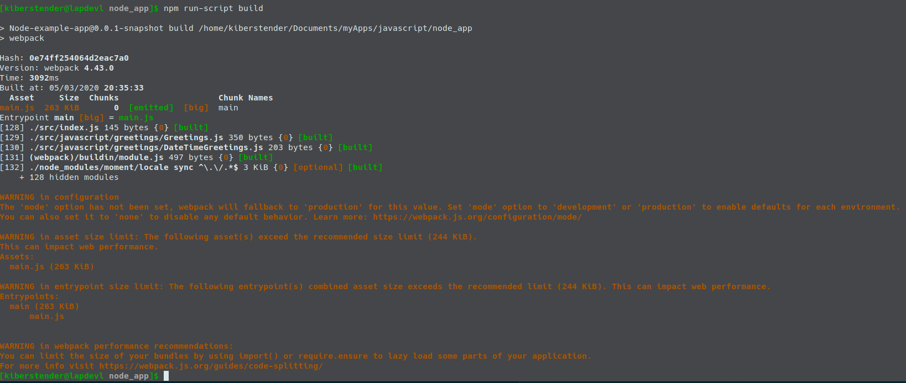
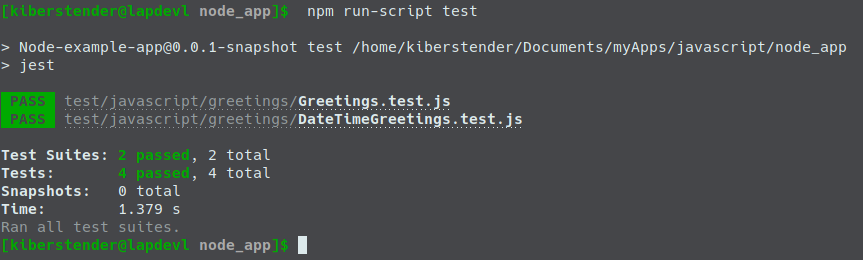

Introdução
Quando estudar desenvolvimento frontend, você pode observará que geralmente Node e NPM não são suficientes e você irá ver pessoas a usar outras aplicações para lidar com arquivos Javascript, HTML, CSS para facilitar a dividsão em várias partes, permitindo você focar em como essas peças individuais irão criar sua aplicação toda. Elas são chamadas Task runners(Executores de tarefas), por que eles fazem exatamente o que o nome sugere: executam tarefas ... nos seus arquivos, transformando -os de uma linguagem para outra (Typescript -> Javascript), checando se sua síntaxe está correta(Aplicar JSLint) ou mesmo tornando seu código em produção bem feio e ininteligível e difícil para outras pessoas copiarem o que você fez (Uglificar seu código). Os mais famosos que você irá encontrar no mercado são: Grunt, Gulp e Webppack.
Esta postagem irá focar na introdução do Webpack. Irei continuar o desenvolvimento de um projeto em Javascript que comecei em outra postagem (NodeJS- Uma introdução bem simples), logo se você não leu, por favor considere fazê- lo antes de começar esta postagem ou se preferir você pode clonar o projeto e ir para a branch específica da postagem:
git clone https://bitbucket.org/kiberStender/node_app.git
cd node_app/
git checkout --track origin/nodejs_introduction
Não irei explicar o que já está explicado na outra postagem e irei assumir que você já está familiarizado com Javascript e NodeJS.
Webpack
Esta aplicação, assim como o nome sugere, é focada em empacotar coisas ou como eles afirmar em seu website: agrupar(bundle) coisas. Conforme seu frontend cresce você se verá com a decisão de ter arquivos imensos para gerenciar mais facilmente o escopo em suas páginas HTML(o que é péssimo, pois se torna difícil não acoplar as coisas já que estão no mesmo arquivo) ou um monte de arquivos pequenos e problemas para adicioná- los na ordem correta ou mesmo lembrar de adicioná- los a sua página HTML. Assim Webpack vem para nos ajudar ofereendo soluções para gerenciar seu projeto, lhe permitindo manter o uso de arquivos desacoplados e os empacotar em um único arquivo no final tornando mais fácil a inclusão em sua página HTML. E isso não é a única possibilidade, já que o Webpsck pode ajudar- te produzindo pequenos agrupamentos de arquivos(bundles), caso seu "arquivo único" ter mais de 244 Kib, tornando assim mais fácil para os navegadores baixá- los em pedaços paralelos acelerando o carregamento de sua página. Estes fazem parte dos recursos que o Webpack "faz de graça" para você, mas existem outros recursos que você pode adicionar, extendendo as funcionalidades do Webpack ao usar os Loaders(Carregadores) e os Plugins.
Como isso funciona?
Enquanto o NPM é como o Maven para o Node, você pode listar e baixar suas dependências, Webpack é onde você diz o que fazer com essas dependências. Quando você lista devDependencies em seu arquivo package.json, estas são (em sua maioria) aplicações CLI(Command Line Interface/Interface de linha de commando), ou seja, aplicações que rodam em terminal/prompt cmd e estas em particular, você pode usar para fazer transformações em seu código, como escrever tudo em Typescript e logo após converter para Javascript. Enquanto você poderia fazer isso manualmente ao instalar o compiladorr Typescript como faria com compilador Java, Webpack lhe permite criar funções que agem em seu código, como se em modo automatizado. Webpack também possui um modo de produção/desenvolvimento onde ele faz por padrão algumas coisas para você, como uglificar seu código automaticamente quando em modo de produção ou minificá- lo removendo espaços em branco desnecessários.
Instalação e configuração
Para garantir que este post funcionará no futuro, instale tudo na mesma versão que coloco aqui:
npm install --save-dev webpack@4.43.0 webpack-cli@3.3.11
Confira seu arquivo package.json. NPM adicionou uma nova devDependency para você e deve conter novas bibliotecas:
Explicando o que a gente acaba de instalar temos:
Webpack: API para usar dentro de sua aplicação Node que ajuda a customizar o "build". Logo se você quiser criar seu próprio jeito de construir ou agrupar sua aplicação, você pode usar esta biblioteca para acelerar seu processo lhe permitindo focar nas coisas que o Webpack talvez não tenhaWebpack-cliAplicação CLI que faz a mesma coisa que o Webpack mas você não precisa importar o Webpack em sua aplicação, você "passa" sua aplicação como parâmetro para o Webpack-Cli e o resto é trabalho da biblioteca Webpack
Webpack possui um comportamento padrão que, quando você o executa, ele irá procurar por um arquivo chamado index.js dentro do diretório /src e irá criar um arquivo novo de nome main.js e o colocará em um diretório chamado dist na raíz de sua aplicação. Por esta razão, iremos mudar nosso /src/app.js para /src/index.js. Agora adicione um novo commando em scripts chamado build em seu arquivo package.json:
...
"scripts": {
...
"build": "webpack",
...
}
...
PS: Sempre que você ver 3 pontos ... isso significa: "Mantenha tudo o que vem antes disso" e se vier depois do que estamos adicionando/modificando isso significa: "Mantenha tudo o que vier depois desses três pontos"
Agora execute seu script e você deverá ver algo similar a isto:
Os warnings(avisos)
Nós temos 2(dois) avisos principais nesta mensagem:
WARNING in configuration: Este aviso está aqui porque, como mencionei no ínicio, Webpack possui suporte para ambientes de produção e desenvolvimento, logo quando você não especifica qual ambiente você está usando, Webpack ativa o modo de produção e emite um aviso para que você saiba que você precisa especificar as informações faltantes. Você pode modificar sua seçãoscriptsempackage.json, ao editarbuilde adicionar o novobuild:prod:... "scripts": { ... "build": "webpack --mode development", "build:prod": "webpack --mode production", ... } ...WARNING in asset/entrypoint/webpack performance: Estes avisos estão aqui porque o Webpack é mais focado em melhorias de aplicação de frontend. Assim para fazer o frontend carregar mais rapidamente seus arquivos, eles devem ser menores que 244 Kib, Por isso ele te aponta duas possíveis soluções: usar a síntaxeimport/exportou usar as dicas de https://webpack.js.org/guides/code-splitting/. Isto é somente para performance da aplicação, pois quanto menores os bundles mais rápidos eles são baixados e usando carregamento preguiçoso(lazy loading) os arquivos não serão carregados na memória a menos que seja necessário. Este é um tópico muito avançado e deve ser coberto em uma postagem dedicada
Após modificar build e adicionar build:prod, se você executar o comando build não verá nenhum aviso:
Mas, se executar build:prod poderá observar o problema com arquivo grande por causa da forma que estamos agrupando momentjs:
Como temos uma aplicação CLI por agora, não iremos 'consertar' este problema pois o mesmo não nos atrapalha, a menos que fosse uma biblioteca, aí teríamos que encontrar uma forma de diminuir o tamanho para não afetar a performance da aplicação de nossos usuários. E ainda pior se isto fosse um frontend. Claro que o tamanhom sugerido é 244 Kib e nós temos 263 Kib, logo não irá afetar tanto assim, mas se isso fosse um frontend sério ou uma biblioteca teríamos sim que melhorar isso.
Se conferir a raíz de nossa aplicação poderá notar, como eu havia dito anteriormento, um novo diretório de nome dist. Este diretório contém um arquivo chamado main.js. Para executar nossa aplicação agora, você precisar editar o comando execute em scripts:
...
"scripts": {
...
"execute": "node dist/main.js",
...
}
...
Agora você pode executar sua aplicação "Hello, Mr/Ms Node Dev" novamente:

Não se esquela de adicionar /dist ao arquivo .gitignore ou qualquer outro arquivo de ignorar que por ventura possa ter:
...
dist/
...
Configuração de build customizada
Eu disse anteriormente que o comportamento padrão do Webpack é procurar por um arquivo de nome "index.js" dentro de /src e isso dispara a configuração padrão do Webpack para processar seu projeto. Mas existem coisas que a configuração padrão não faz por você, como processar arquivos HTML, arquivos CSS ou transpiladores como Typescript, Coffeescript, etc. Para tê- los você precisa configurar o Webpack manualmente e para fazê- lo você deve criar uma arquivo chamado webpack.config.js dentro do raíz de sua aplicação.
No arquivo webpack.config.js você especifica todas as coisas que você quer buildar em sua aplicação. Como, compilar Typescript para Javascript(Eu sei, sou muito obcecado com Typescript), SASS para CSS, copiar arquivos de um diretório para outro(Imagine que esteja a trabalhar com Spring por exemplo, após todo o processo, você copia de dist para /src/main/resources/static/) e outras coisas legais que nós iremos ver. Crie o arquivo webpack.config.js e copie o exemplo abaixo que possui a mesma configuração padrão que se tem quando vc não possui o arquivo:
const path = require("path");
module.exports = {
entry: "./src/index.js", //1
output: { //2
filename: "main.js",
path: path.resolve(__dirname, "dist")
},
devtool: "source-map" //3
};
entry: Aqui é onde se diz ao Webpack qual seu arquivo "principal". Aquele que inicia sua aplicação toda. Webpack foi feito para ser usado com SPA(Single Page Application/Aplicação de Página Única). mas isso não tem impede de fazer uma MPA(Multiple Page Application/Aplicação de Múltiplas Páginas) normal. É só que ele é mais focado em SPA. Por padrão Webpack procura por/src/index.js, mas aqui você pode mudar isso para qualquer arquivo que você prefira e em qualquer lugar que ele esteja. Pode ser/src/app.jsou/myapp/src/my_main_file.js, você decideoutput: Aqui você define as opções do bundle(agrupamento). Geralmente nós temos apenas um arquivo,main.jse dizemos ao Webpack que queremos colocá- lo em um diretório chamadodist, que será criado caso não exista. Se você não gostar desta localização você é livre para dizer onde quer que este diretório esteja e qual o nome você quer pôr. Assim você pode ignorar este diretório em seu arquivo.gitignore,dockerignoreou qualquer arquivo de ignorar que você possa estar usando. Existem outras opções aqui para você configurar sua aplicação para ter mais bundles se precisar acelerar o download ou problemas similaresdevtool: Este campo controla como processar o mapeamento do código (source mapping) para melhor depurar. Estou a usar o valorsource-mapque significa, crie o arquivo "'my_js_filename'.js.map", ajudando o navegador a depurar sua aplicação. Você pode encontrar mais informações aqui
Como pode ver, esta é uma configuração muiiiiiiiiito simples.
Plugins
Um plugin é uma extensão feita especificamente para o Webpack. Por causa disso, ela pode modificar seus arquivos adicionando e removendo coisas ao invés de simplemente ler seu arquivo e criar um arquivo novo modificado. Além do fato de alguns deles poderem permitir você escolher em qual fase do ciclo de vida da construção você quer executá- lo. Para adicionar um plugin você tem que primeiro usar o NPM para instalar(ou escrever seu próprio plugin =D), importar em seu arquivo webpack.config.js, então instanciar e escrever o campo plugin para avisar o Webpack que você quer usá- lo como verá abaixo:
const path = require("path");
const MeuPlugin = require("meuPlugin");
module.exports = {
entry: ...,
output: ...,
devtool: ...,
plugins: [
new MeuPlugin(params_se_tiver_algum, ...)
]
};
Auto deletar arquivo auto gerados para evitar cache antigo
Um dos problemas mais chato no mundo do desenvolvimento são caches antigos. Você está programando como uma locomotiva, completamente motivado com a quantidade de idéias na sua cabeça e então você executa seu código novo e Boom... nada muda em sua aplicação. Você recompila, atualiza a página em seu navegador, abre em modo Incognito e nada, página antiga estática na sua frente. Você deleta parte do seu código para forçar um erro e nada. Então lembra do cache, deletá- o e sua aplicação está a executar o código novo. O código que você mudou 1000 vezes a tentar encontrar o que estava errado após 3 dias a depurar.
Uma das formas de prevenir cache é não ter arquivos antigos e para deletá- los você pode adicionar o plugin Clean Webpack plugin. Este plugin deleta tudo o que está na properiedade output.path em nosso arquivo webpack.config.js. Ele deleta o conteúdo, não o diretório. Para usá- lo primeiro o instalamos:
npm install -save-dev clean-webpack-plugin@3.0.0
Agora importamos em nosso arquivo webpack.config.js e adicionamos a propriedade do tipo array plugins:
const path = require("path");
const { CleanWebpackPlugin } = require("clean-webpack-plugin");
module.exports = {
entry: ...,
output: ...,
devtool: ...,
plugins: [
new CleanWebpackPlugin()
]
};
Agora nosso problema está resolvido. A qualquer momento que você executar build ou build:prod, antes de iniciar a compilação da aplicação o plugin irá deletar o conteúdo de /dist e assim você sempre terá as versões mais novas dos arquivos sendo geradas.
Loaders
Loaders(Carregadores) são aplicações que não foram criadas especificamente para Webpack para aplicar transformações, validações ou modificações em alguns arquivos de seu projeto. Como por exemplo, transpiladores Typescript(eu te disse), Coffeescript e SASS. Eles foram criados para você usá- los como quiser do jeito que quiser, independente de plataforma. Logo para usá- los no Webpack você deverá encontrar ou criar um loader, uma pequena extensão para Webpack que ensine como executar estas aplicações CLI dando seus arquivos como parâmetro de entrada. Após isso o loader será criado e importado para seu projeto, e em seu arquivo webpack.config.js você pode dizer quais arquivos serão aplicados a estess loaders e quais parâmetros você quer prover. Geralmente você especifica os arquvivos usando uma regexp/expressão regular para pegá- los pela extensão de arquivo como /\.(js|jsx)$/ ou /\.ts$/. Para adicionar loaders você precisar adicionar uma propriedade nova chamada module e um array de regras como no exemplo abaixo:
module.exports = {
entry: ...,
output: ...,
devtool: ...,
plugins: ...,
module: {
rules: [
{
test: /\.ts$/
use: {
loader: "typescript-loader"
}
}
]
}
};
Babel
Hoje em dia temos pelo menos 3(três) versões de Javascript: ES5, ES6 e ES2018. Ambos têm suas diferenças e alguns navegadores os implementaram parcialmente. Então vamos dizer que você quer usar toda a nova síntaxe do ES2018 mas está com medo de que nem todos os seus usuários usam navegadores atualizados ou mesmo que os navegadores nao têm uma boa implementação dos recursos que você está interessado(como import/export).
Uma boa solução que temos hoje é usar Babel. Babel é um tranpilador de Javascript para Javascript, assim você pode programar em ES2018 e compilar(ou neste caso transpilar) para uma versão mais antiga de Javascript que os navegadores ou mesmo o NodeJs já dominou. Para fazer isso, você precisa especificar o loader em sua configuração do Webpack. Então a primeira coisa a ser feita é adicionar o Babel:
npm install --save-dev babel-loader@8.1.0 @babel/core@7.9.0 @babel/preset-env@7.9.0
Agora mude sua configuração do Webpack para adicionar o loader:
...
module: {
rules: [
{
test: /\.(js|jsx)$/,
exclude: /node_modules/, // We don't want babel to try to transpile all js file, only the ones in our project
use: ["babel-loader"]
}
]
}
...
O prórximo passo é criar um arquivo de configuração para o Babel na raíz de seu projeto chamado babel.config.js:
module.exports = {
presets: [
[
"@babel/preset-env",
{
targets: {
node: "current",
}
}
]
]
};
Agora podemos mudar nossas expressões require/module.export em nossa aplicação para import/export. Vamos primeiro começar com /src/javascript/greetings/DateTimeGreeting.js:
import moment from "moment";
export default class DateTimeGreetings {
greetDateTime(dateFormat){
return `São: ${moment().format(dateFormat)}`;
}
}
Sim, você tem que remover module.exports.DateTimeGreetings = DateTimeGreetings;. Agora atualize /src/javascript/greetings/Greeting.js:
import DateTimeGreetings from "./DateTimeGreetings.js";
export default class Greetings {
...// Mantenha o contrutor como ele é
greet(){
return `Hello Mr/Ms ${this.name}\n${this.dateTimeGreeter.greetDateTime("MMMM Do YYYY, h:mm:ss a")}`;
}
}
Sim você tem que remover module.exports.Greetings = Greetings;. Agora a última mudança é em /src/index.js:
import Greetings from "./javascript/greetings/Greetings.js";
...
O motivo pelo qual eu não esta a usar import/export antes, era que a versão do Node que estou a usar neste projeto(Node v12.14.1)) não usporta essa síntaxe. Ao invés de esperar o Node adicionar esta functionalidade, bael nos ajuda convertendo import/export para a velha síntaxe que estávamos a usar anteriormente require/module.exports. Mas não somente import/export fora adicionado. O que diz ao Babel qual versão do Javascript estamos a usar e para qual queremos que seja compilada, é o preset. Ao usar @babel/preset, estamos a delegar para quem criou este preset a seleção de quansi versão de Javascript queremos sair e para qual queremos chegar. Com este preset nós temos import/export, const, let, object destructuring e muitos outras coisas legais. Você pode cirar seu próprio preset se quiser, basta seguir este link.
Import path resolution(Resolução de caminho de importação)
Você pode ter notado ou não uma diferença quando importamos o momentjs e quando importamos nossos arquivos Greetings.js/DateTimeGreetings. Se você não percebeu, estamos a usar importação relativa, ou seja, nós como desenvolvedores, devemos saber onde o arquivo que queremos importar está em relação ao arquivo que irá importá- lo e passar o caminho correto. Ao invés de simplesmente usarmos:
import Greetings from "greetings/Greetings";
Temos que usar assim:
import Greetings from "./javascript/greetings/Greetings";
Agora imagine que nossa classe Greetings recebe uma instância de uma outra classe. Vamos criar uma classe Person(Pessoa) para melhor ilustrar. Vá até /src/javascript e cri um novo diretório/pacote chamado person e dentro dele crie um novo arquivo chamado Person.js e colocar o seguinte conteúdo:
export default class Person {
constructor(name, surname){
this.name = name; //Nome
this.surname = surname; //Sobrenome
}
}
Agora importaremos essa classe em ambos os arquivos /src/index.js e /src/javascript/greetings/Greeting.js. Primeiro em /src/javascript/greetings/Greeting.js:
import DateTimeGreetings from "./DateTimeGreetings.js";
import Person from "../person/Person"
export default class Greetings {
constructor(person = new Person("Unnamed", "Person")){
this.person = person;
this.dateTimeGreeter = new DateTimeGreetings();
}
greet(){
const {name, surname} = this.person;
return `Hello Mr/Ms ${name} ${surname}\n${this.dateTimeGreeter.greetDateTime("MMMM Do YYYY, h:mm:ss a")}`;
}
}
Agora em /src/index.js:
import Person from "./javascript/person/Person";
import Greetings from "./javascript/greetings/Greetings";
const p = new Person("Node", "Dev");
let greetDev = new Greetings(p);
...
Você vê a diferença? Quanto mais arquivo você tiver, pior será se por exemplo no futuro mudarmos de /src/javascript/person para algo como /src/javascript/models/person, por que então teremos que mudar em todos os lugares que importam a classe Person e qualquer coisa que Person importa também(caso no futuro essa classe importe algo). Assim para melhorar isto e fazer com o Webpack trabalhe para nós, vamos adicionar resolução de módulo:
...
module.exports = {
entry: ...,
output: {...},
devtool: ...,
plugins: [...],
module:{...},
resolve: {
modules: [path.resolve(__dirname, "src/javascript"), "node_modules"]
}
}
Agora estamos a dizer: Para qualquer módulo que eu importar, primeiro procure em /src/javascript e depois se não encontrar, procure em node_modules. E agora mude seu arquivo /src/index.js para isto:
import Person from "person/Person";
import Greetings from "greetings/Greetings";
...
E seu /src/javascript/greetings/Greetings.js para:
import DateTimeGreetings from "greetings/DateTimeGreetings";
import Person from "person/Person";
export default class Greetings {
...
Você vê como as coisas estão mais normalizadas agora? Isso é porque tudo está a usar /src/javascript como referência ao invés do arquivo que você está importando.]
Testando em Javascript com Webpack
Se você tentou executar nossos velhos testes, você viu que temos um problema agora. Nós mudamos da antiga síntaxe require/module.exports em nossos arquivos Greeting.js/DateTimeGreetings.js para usar a síntaxe import/export mas não em nossos testes:
Para resolver isso, temos que fazer 3(três) coisas:
-
Mudar todos
requiretoimport. Vamos começar com/test/javascript/greetings/DateTimeGreetings.jsimport sinon from "sinon"; import DateTimeGreetings from "greetings/DateTimeGreetings"; ...Agora, mude
/test/javascript/greetings/Greetings.js:import sinon from "sinon"; import Greetings from "greetings/Greetings"; import DateTimeGreetings from "greetings/DateTimeGreetings"; ... -
Se você tentar executar os testes agora, verá que eles não conseguem encontram os módulos
greetings/Greetings.jsegreetings/DateTimeGreetings.js. Isto é devido ao fato de que o Jest não tem conhecimento de nossa Resolução de caminho no Webpack.Para resolver isso, iremos criar um novo arquivo na raíz de nosso projeto, chamdojest.config.jse neste arquivo iremos configurar resolução de módulos assim como fizemos no Webpack:module.exports = { "moduleDirectories":["src/javascript", "node_modules"] } -
A última mudançã é consertar
/test/javascript/greetings/Greetings.js, porque nós adicionar uma nova classePersonpara substituir aStringsimples que tínhamos no primeiro parâmetro do construtor deGreetings:import sinon from "sinon"; import Greetings from "greetings/Greetings"; import DateTimeGreetings from "greetings/DateTimeGreetings"; import Person from "person/Person"; const person = new Person("NodeJS", "Dev"); const greetDev = new Greetings(person); ... test(`should return "Hello Mr/Ms NodeJS Dev\\nIt is: April 30rd 2020, 10:20:00 pm"`, function() { //GIVEN const expected = "Hello Mr/Ms NodeJS Dev\nIt is: April 30rd 2020, 10:20:00 pm"; //WHEN const actual = greetDev.greet(); //THEN expect(actual).toEqual(expected); }); test(`should not return "Hello Mr/Ms NodeJS Dev \\nIt is: April 30rd 2020, 10:20:00 pm"`, function() { //GIVEN const expected = "Hello Mr/Ms NodeJS Dev \nIt is: April 30rd 2020, 10:20:00 pm"; //WHEN const actual = greetDev.greet(); //THEN expect(actual).not.toEqual(expected); }); ...
Sim, nós não precisamo passar o caminho completo para as classes que estamos importando mais. Agora você pode executar e ver seus testes fincionando como devem:
E aqui terminaos o tutorial básico de Webpack, eu espero que você tenho aprendido e entendido bem tudo o que eu ensinei ^^
Conclusão
Nesta postagem aprendemos como Webpack funciona e como ele pode nos ajudar a melhorar produtividade. Aprendemos o que são Plugins e Loaders, adicionamos Babel, Resolução de caminho e melhoramos nossa suite de testes. Se algo não ficou muito claro ou se preferir ler o código, por favor va até o repositório do bitbucket, clone- o e após faça o checkout da branch webpack_introduction. Sinta- se livre para acessar a versão original desta postagem em inglês